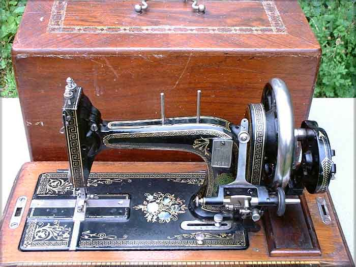

Faudels, London (retailer)
Made in Karlsruhe in Germany by Gritzner
Picture courtesy of Claire Sherwell

©
Alan Quinn 2002 All Rights Reserved
This page may not be reproduced or distributed in part or in whole without the prior written permission of the copyright owner